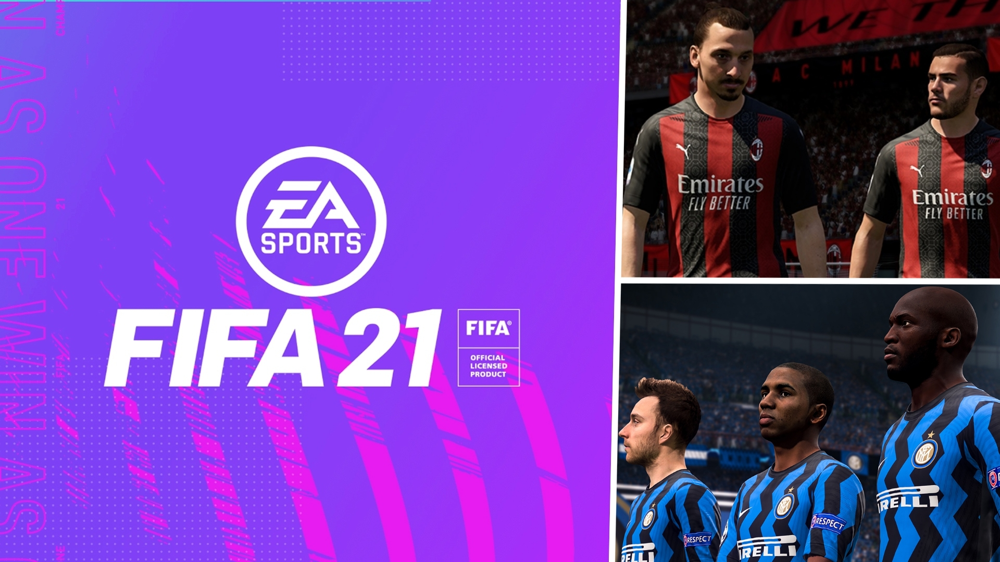
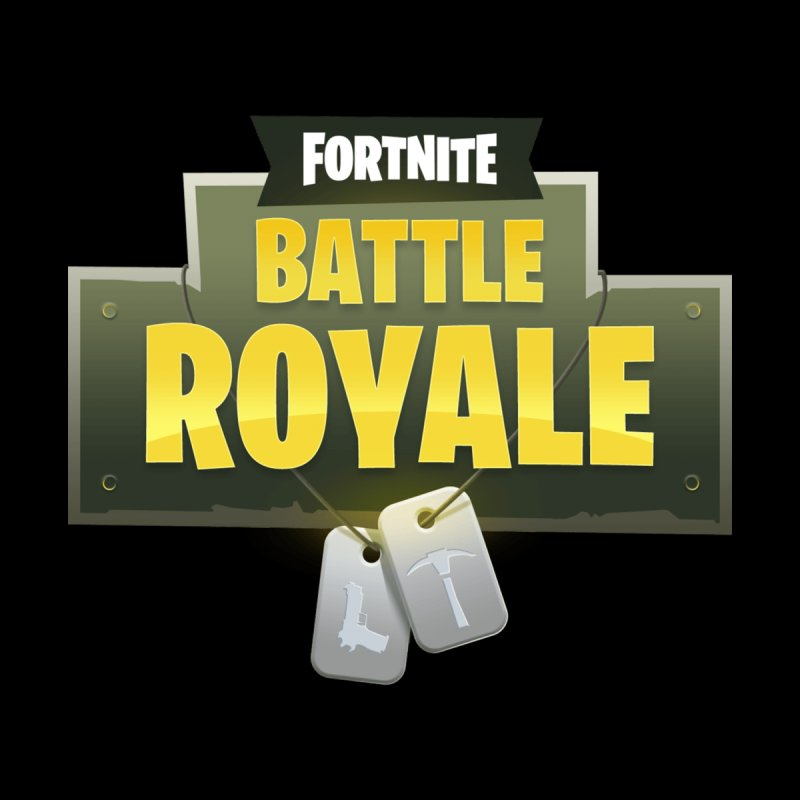
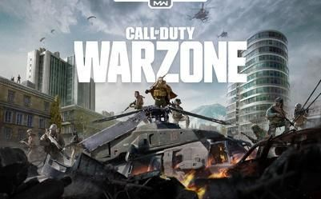

Gaming
FIFA
Fornite
Call of Duty: Warzone
I am huge fan of videogames, I played hundreds of them but here I am going to show you tree of my current and favorites games.
The legendary FIFA series has been produced by EA SPORTS for over 20 years, and is now the largest sports video game franchise on the planet. FIFA brings The World’s Game to life, letting you play with the biggest leagues, clubs, and players in world football, all with incredible detail and realism.

Official Web Site:
FIFA 21 Web Site
Fortnite is a Free-to-Play Battle Royale game and so much more. Hang out peacefully with friends while watching a concert or movie. Build and create your own island, or fight to be the last person standing.

Official Web Site:
Fornite Web Site
Warzone is a new, massive combat experience with up to 150 players from the world of Call of Duty: Modern Warfare and is free-to-play for everyone. Join forces with your friends and jump into a battleground with up to 150 players.

Official Web Site:
Callofduty:Warzone Web Site
Soccer
Soccer is a team sport played with a spherical ball between two teams of 11 players. It is played by approximately 250 million players in over 200 countries and dependencies, making it the world's most popular sport. The game is played on a rectangular field called a pitch with a goal at each end. The object of the game is to outscore the opposition by moving the ball beyond the goal line into the opposing goal. The team with the higher number of goals wins the game.
If you want to continue reading more about soccer click the picture below